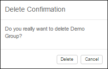

Note: It is not possible to delete the last user group that has Read and Write
permission to Privileges.
To delete a user group or user role, do these steps:
-
Click the
 User Groups icon on the header bar.
The User Group page shows.
User Groups icon on the header bar.
The User Group page shows. -
Click the
 Delete icon in the User Group
Details or User Role Details pane.
A confirmation dialog appears:
Delete icon in the User Group
Details or User Role Details pane.
A confirmation dialog appears:
Delete Confirmation Dialog